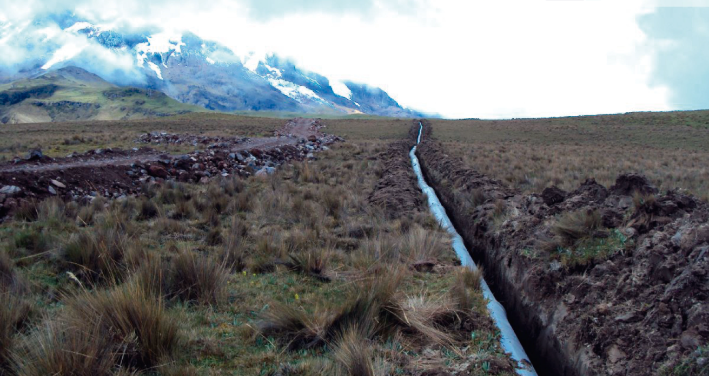

Conoce el Recorrido Mica-Sur
Desde la laguna Mica, el agua inicia un viaje silencioso y sagrado. Desciende por túneles y canales que cruzan montañas y valles, acariciando piedras y raíces en su camino. Pasa por estaciones reguladoras, plantas de tratamiento y redes invisibles bajo la ciudad. Es un recorrido de amor y paciencia, hasta llegar a tu hogar, clara y serena, para calmar tu sed, lavar tus días y recordarte que la naturaleza siempre cuida en silencio.